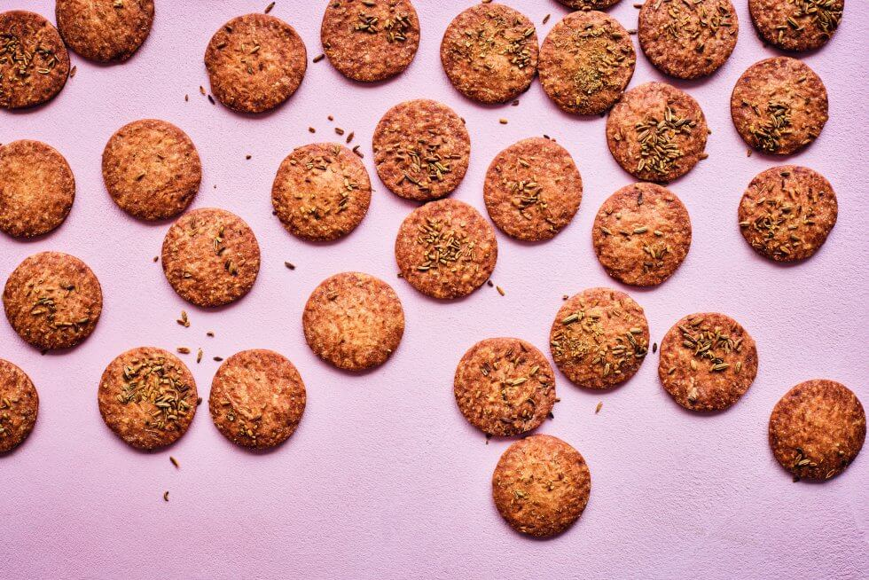

Venkelkoekjes

Ingredienten:
- 1 ei
- 375 g bloem
- 250 g boter
- 125 g bruine suiker
- 50 g venkelzaad
- 7 g citroensap
- zout
Bereiding
- Verwarm de oven voor op 175°C.
- Klop de boter los met de suiker. Roer het ei en het citroensap erdoor en voeg dan de bloem en het zout toe. Kneed tot je een stevig deeg hebt.
- Wikkel het deeg in de plasticfolie en laat het even rusten in de koelkast..
- Rol het deeg uit en steek er koekjes uit, bestrooi ze met het venkelzaad. Leg ze over een met bakpapier beklede bakplaat en bak 20 minuten in het midden van de oven totdat goudbruin is geworden.